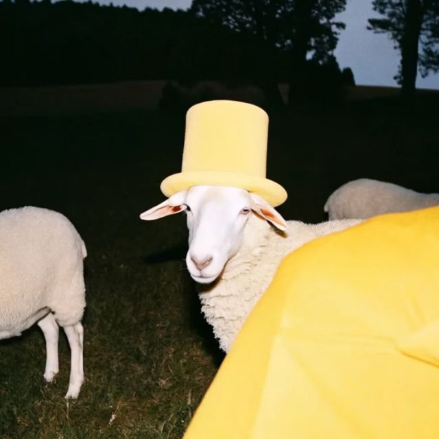

肖金津
专业：软件工程
学号：2025090904027
爱好: 看小说，听音乐，打排球（烂烂的很安心）
自我介绍：来自广东珠海，虽然生长于美食荒漠但有一张爱吃的嘴，能吃辣所以极大的拓宽了在成都的美食探索地图。对于计算机方面，几乎零基础（暑假自学了一点C语言），选专业时凭借着初高中一丢丢的编程经历（小乌龟画圆圈），义无反顾地选择了顺应时代潮流的软件工程（实则是不喜欢物理）。虽然专业选择上没怎么考虑兴趣但学到目前感受还不错，成都好吃的很多，校区地理位置也很方便。
自我评价: 拥有比较优秀的专注能力，并善于在投入的事物中寻找成就感，于是学习能力自认为是ok的并且积极性比较高
做题心得：本来学完了HTML就打算做一下题的然后发现真的是丑的惨不忍睹，所以还是把css也学了才来写。因为网课看的比较快，所以刚开始写题时会比较混乱，例如弄混写的顺序，盒子套盒子时加上css就会乱等等，所以又去重温了一下相关内容，后面就顺畅多了。